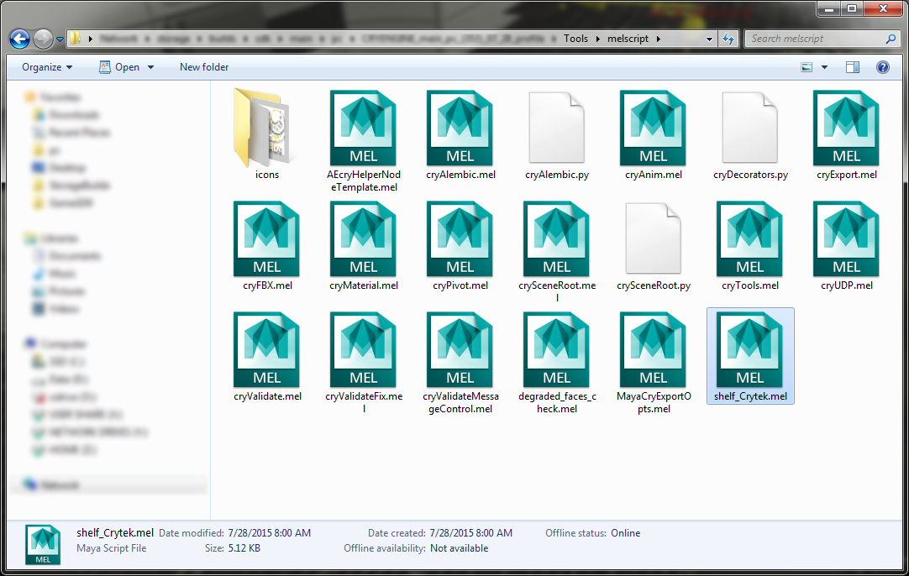
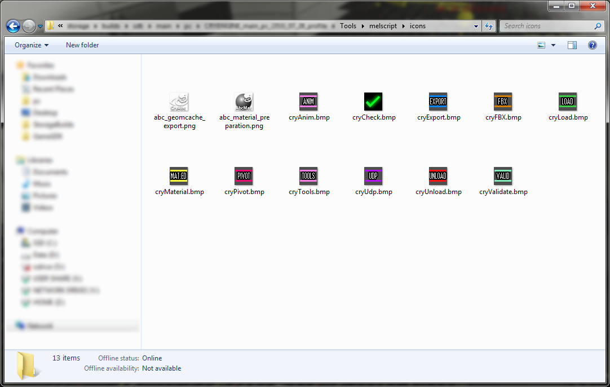
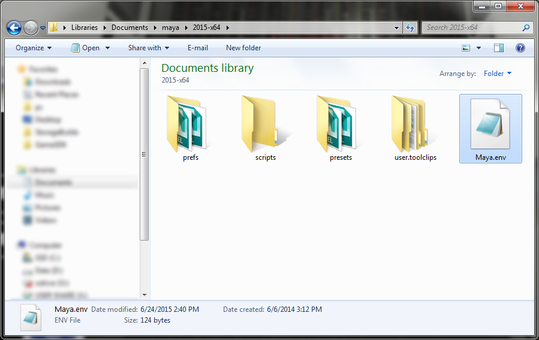
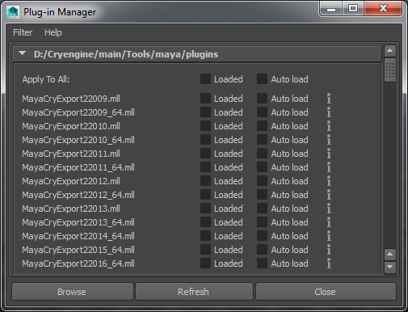
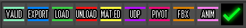
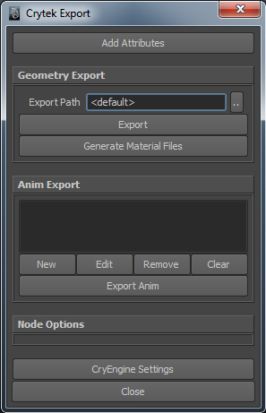

Overview
Below is a list of supported Exporters and their associated file names. From Maya 2014, 32-bit support has been discontinued.
Plugin Files for Different Versions of Maya
Version | File | |
|---|---|---|
| 32bit | MayaCryExport22009.mll |
64bit | MayaCryExport22009_64.mll | |
| 32bit | MayaCryExport22010.mll |
64bit | MayaCryExport22010_64.mll | |
| 32bit | MayaCryExport22011.mll |
64bit | MayaCryExport22011_64.mll | |
| 32bit | MayaCryExport22012.mll |
64bit | MayaCryExport22012_64.mll | |
| 32bit | MayaCryExport22013.mll |
64bit | MayaCryExport22013_64.mll | |
Maya 2014 | 64bit | MayaCryExport22014_64.mll |
Maya 2015 | 64bit | MayaCryExport22015_64.mll |
Maya 2016 | 64bit | MayaCryExport22016_64.mll |
Maya 2017 | 64bit | MayaCryExport22017_64.mll |
Maya 2018 | 64bit | MayaCryExport22018_64.mll |
| Maya 2019 | 64bit | MayaCryExport22019_64.mll |
| Maya 2020 | 64bit | MayaCryExport22020_64.mll |
| Maya 2021 | 64bit | MayaCryExport22021_64.mll |
| Maya 2022 | 64bit | MayaCryExport22022_64.mll |
| Maya 2023 | 64bit | MayaCryExport22023_64.mll |
Before the installation of any plugins via CryToolsInstaller make sure to have setup your build information via the Settings Manager tool.
Automatic Installation with CryToolsInstaller
We recommend using the CryToolsInstaller to install all DCC tool packages, including Maya. If you need to manually install the CryToolsInstaller, then follow the instructions in the Manual Install section below.
Manual Installation
This is the process for the manual installation of CryToolsInstaller and requires the copying of some files.
- %MAYAVERSION% should correspond with the version of Maya you are using
- %CRYENGINE% should reflect the path (as setup on your PC) to CRYENGINE
1. Run the <root>\Tools\SettingsMgr.exe and setup the path to your build. See the Settings Manager article on how to do this:

2. Copy the file: <root>\Tools\melscript\shelf_Crytek.mel to the folder: \My Documents\maya\%MAYAVERSION%\prefs\shelves\

3. Copy the <root>\Tools\melscript\icons\ contents to the folder: \My Documents\maya\%MAYAVERSION%\prefs\icons\

4. Add the following to the 'Maya.env' file into \My Documents\maya\%MAYAVERSION%\
NOTE: See the warning at the beginning of this section
MAYA_PLUG_IN_PATH=%CRYENGINE%/Tools/maya/plugins/
MAYA_SCRIPT_PATH=%CRYENGINE%/Tools/melScript

5. In Maya make sure that the 'MayaCryExport2%MAYAVERSION%.mll' plugin is loaded in Plugin Manager.
Go to Windows -> Settings/Preferences -> Plug-in Manager.
Use the browse button and load the plugin directly from your <root>\Tools\maya\plugins\ folder.

6. Once loaded, Maya may have to be restarted for the Exporter to work.

7. Click the Export button and the Exporter dialog box will be displayed. This is the main menu from which you will export your assets.
